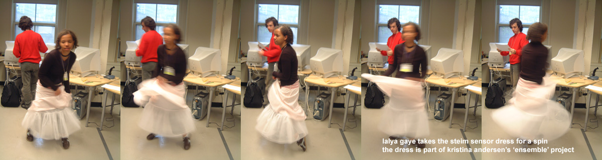

NIME 03
McGill University, Montreal, 03.05.22 - 03.05.24

NIME 03 pictures from: Thursday
Friday
Saturday
There is a more exhaustive set of pictures at Yoichi Nagashima's
NIME 03 report
(in Japanese).
For information about the conference and the online proceedings see the
NIME 03 Site
See also Erik Cook's
NIME 03 Recap
NIME 04 will be held in
Hamamatsu
Japan, June 2004
A Note about Hugh Le Caine
One of the most rewarding talks at NIME 03 was the retrospective on
Hugh Le Caine given by Alcides Lanza. Particularly important for us is the
emphasis Hugh Le Caine placed on the playability and expressivity of
the instruments he built. I suspect there is still much to be
learned from Le Caine's work.
A good starting point for the Le Caine story is this
article
by Gayle Young. Also see the
Hugh Le Caine site.
I highly recommend the CD Hugh Le Caine: Compositions & Demonstrations
1946-1974, available from the Electronic Music Foundation (also on amazon.com).
Home